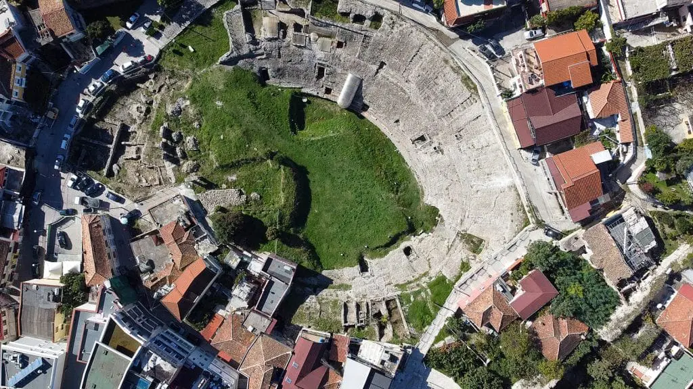
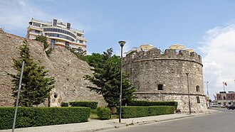
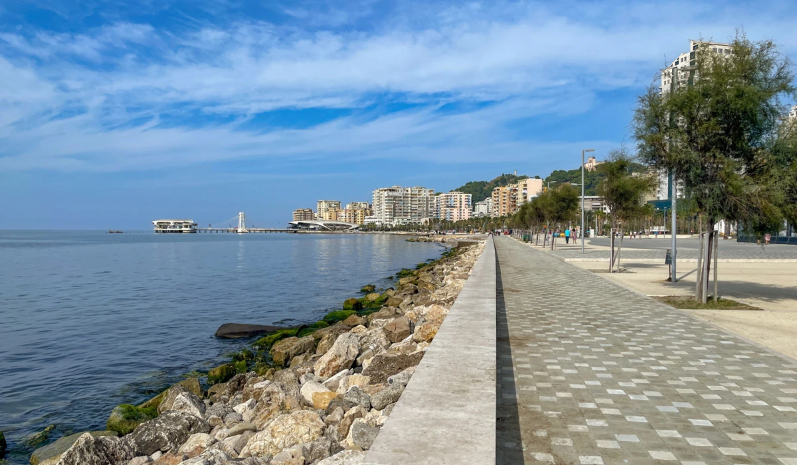
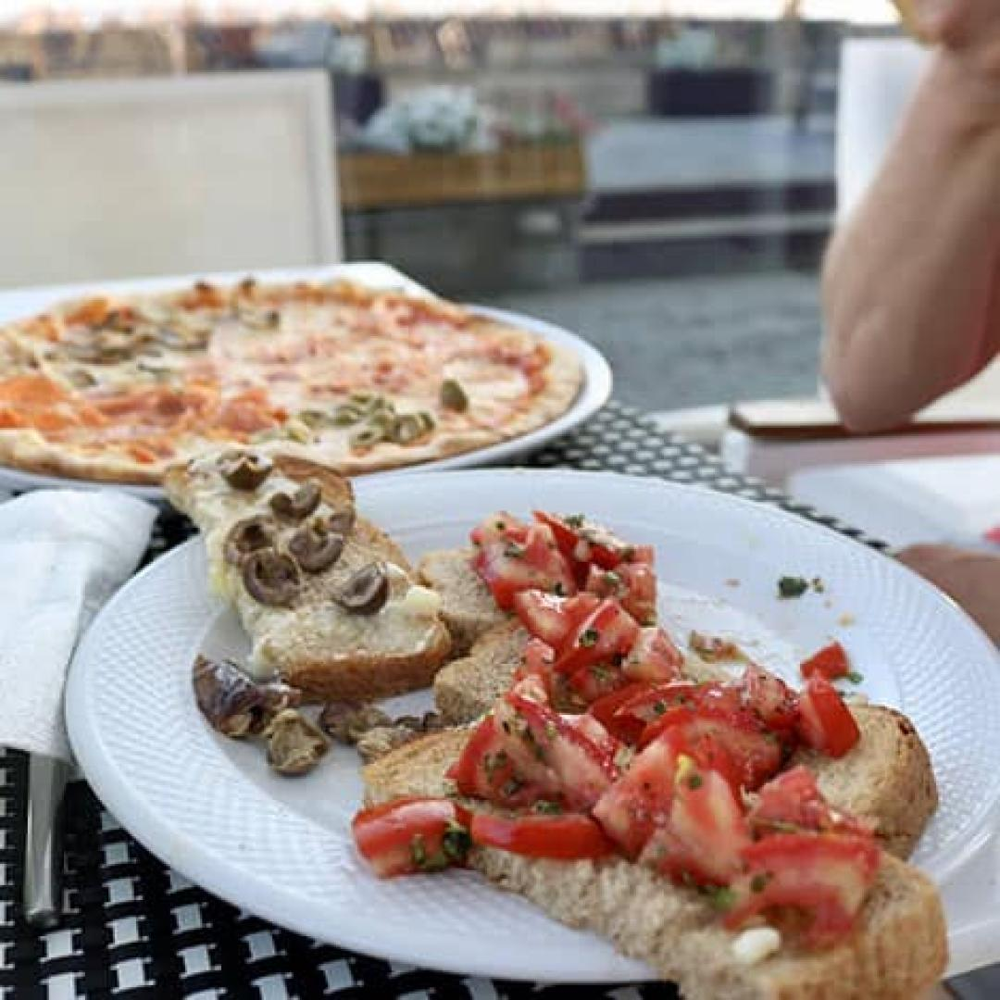

History

The Amphitheatre of Durrës is one of the most significant archaeological monuments in Albania and the largest Roman amphitheatre in the Balkans. Built during the 2nd century AD, it could hold around 20,000 spectators and was used for gladiator battles and public events. Today, it remains a remarkable symbol of the city's ancient past and attracts visitors from all over the world.
Located in the historic center of Durrës, the amphitheatre was rediscovered in 1966 after being buried beneath the city for centuries. Visitors can explore its impressive underground corridors, seating areas, and the unique early Christian chapel decorated with beautiful mosaics. As one of Albania's most important cultural landmarks, the Amphitheatre of Durrës offers a fascinating journey through Roman and Byzantine history.
Attractions

The Venetian Tower is one of the most recognizable landmarks in Durrës and an important part of the city's historic fortifications. Built during the 15th century by the Venetians, the tower was designed to strengthen the defensive walls and protect the city from attacks coming from the Adriatic Sea.
Located near the center of Durrës, the tower offers visitors a chance to explore a unique piece of Albanian history. Its impressive stone structure, strategic location, and connection to the ancient city walls make it a popular attraction for tourists. Today, the Venetian Tower stands as a symbol of Durrës' rich cultural heritage and centuries of maritime history.
Boardwalk

Vollga is one of the most popular and vibrant areas in Durrës, located along the city's beautiful coastline. Known for its seaside promenade, palm trees, and stunning views of the Adriatic Sea, it is a favorite destination for both locals and tourists looking to relax and enjoy the atmosphere of the city.
The area is home to numerous cafés, restaurants, and entertainment venues, making it an ideal place for evening walks and social gatherings. With its combination of natural beauty, modern attractions, and breathtaking sunsets, Vollga has become one of the most iconic and visited locations in Durrës.
Culinary

Durrës offers a rich culinary experience that combines traditional Albanian flavors with fresh seafood from the Adriatic Sea. Visitors can enjoy a variety of local dishes, including grilled fish, seafood pasta, byrek, tavë kosi, and traditional desserts that reflect the region's cultural heritage.
The city's restaurants and seaside cafés provide a welcoming atmosphere where locals and tourists can taste authentic cuisine while enjoying beautiful coastal views. From family-run taverns to modern restaurants, Durrës is a destination that satisfies every food lover.